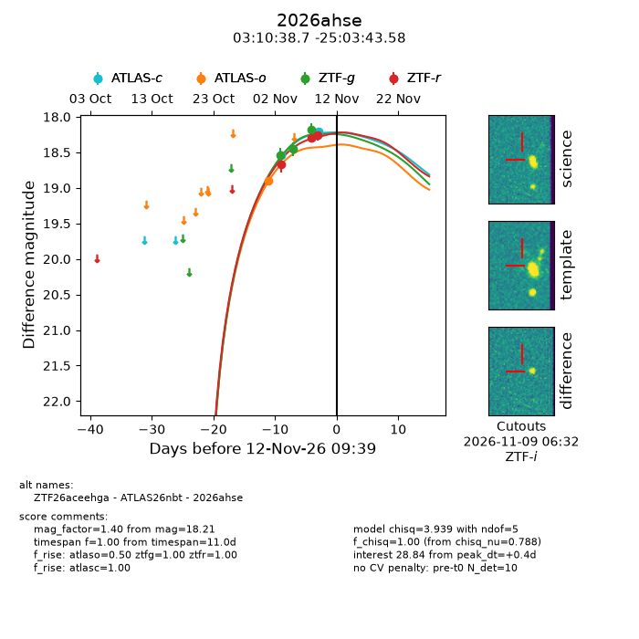
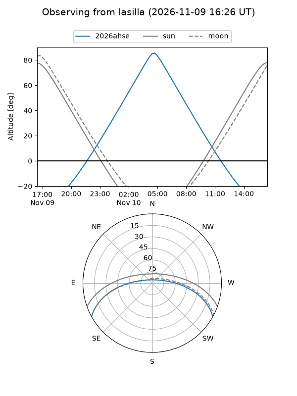
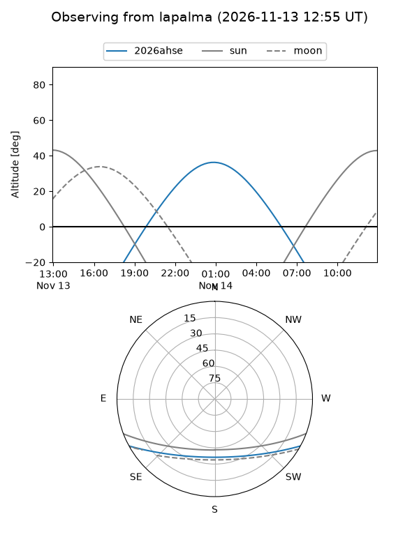
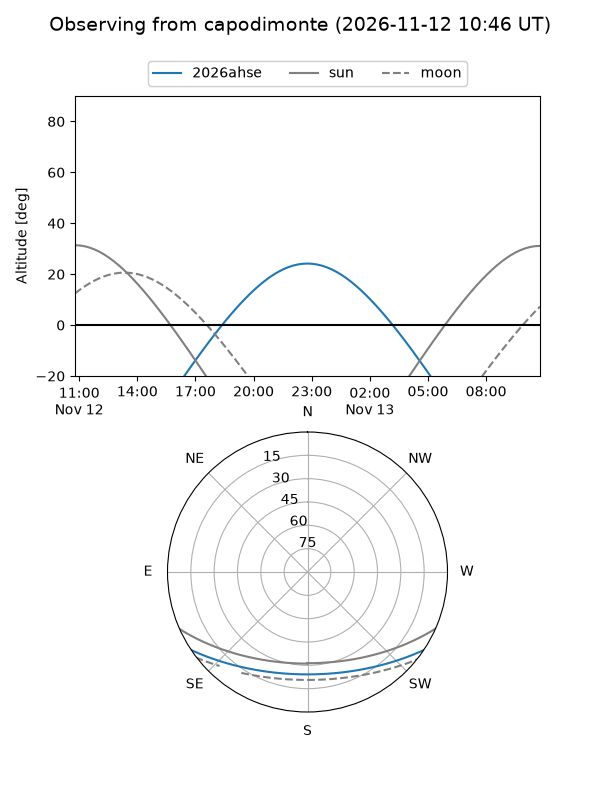
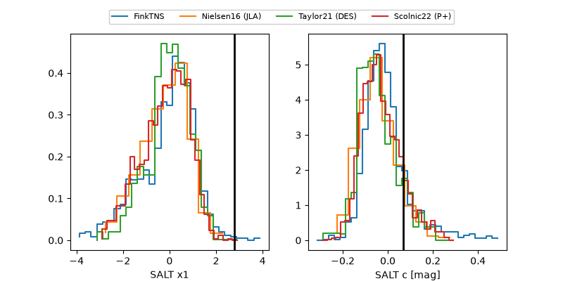

2026ahse
Target 2026ahse at 2026-11-12 09:45
Aliases and brokers:
FINK-ZTF: ztf.fink-portal.org/ZTF26aceehga
Lasair-ZTF: lasair-ztf.lsst.ac.uk/objects/ZTF26aceehga
ALeRCE-ZTF: alerce.online/object/ZTF26aceehga
YSE-PZ: ziggy.ucolick.org/yse/transient_detail/2026ahse
TNS name: wis-tns.org/object/2026ahse
Direct TNS query: direct search
alt names
ZTF26aceehga (ztf,fink_ztf)
2026ahse (tns,yse)
ATLAS26nbt (atlas)
Coordinates:
equatorial (ra, dec) = 47.6614,-25.06210
equatorial (HMS+DMS) = 03:10:38.75,-25:03:43.58
galactic (l, b) = (217.1168,-58.77581)
Flags:
peak dt: +0.4
Photometry:
last atlasc=18.21, atlaso=18.90, ztfg=18.17, ztfr=18.25
3 atlasc, 1 atlaso, 3 ztfg, 3 ztfr detections
Lightcurve

Visibility



Additional plots
